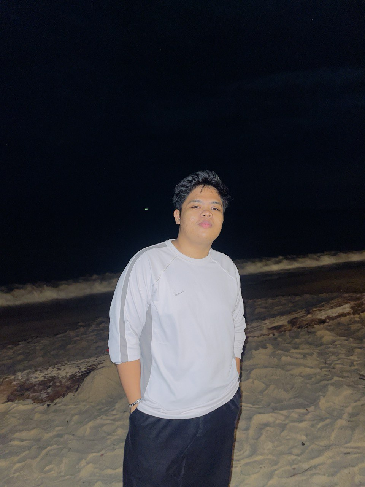
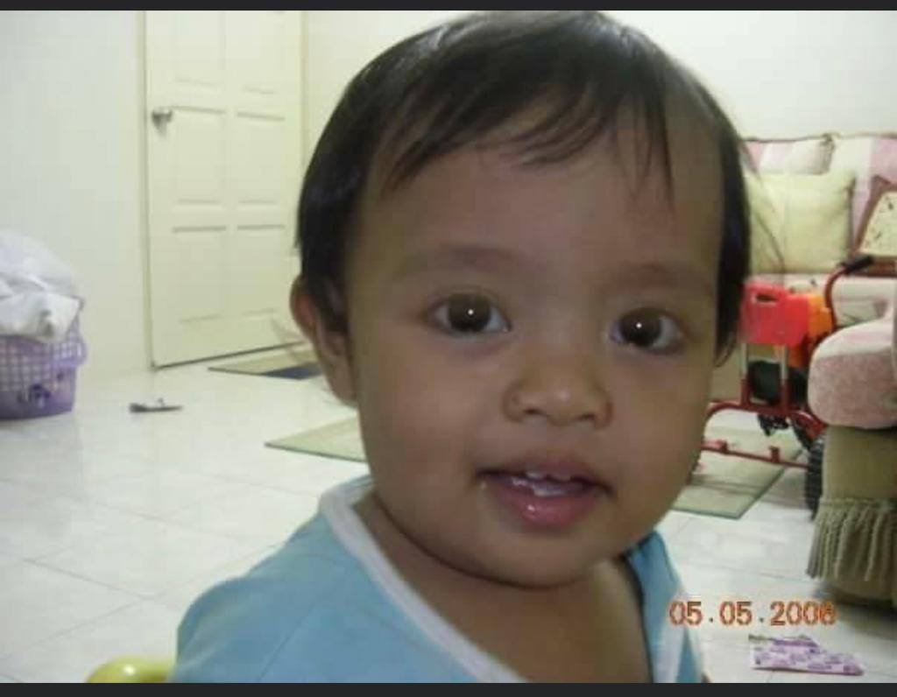
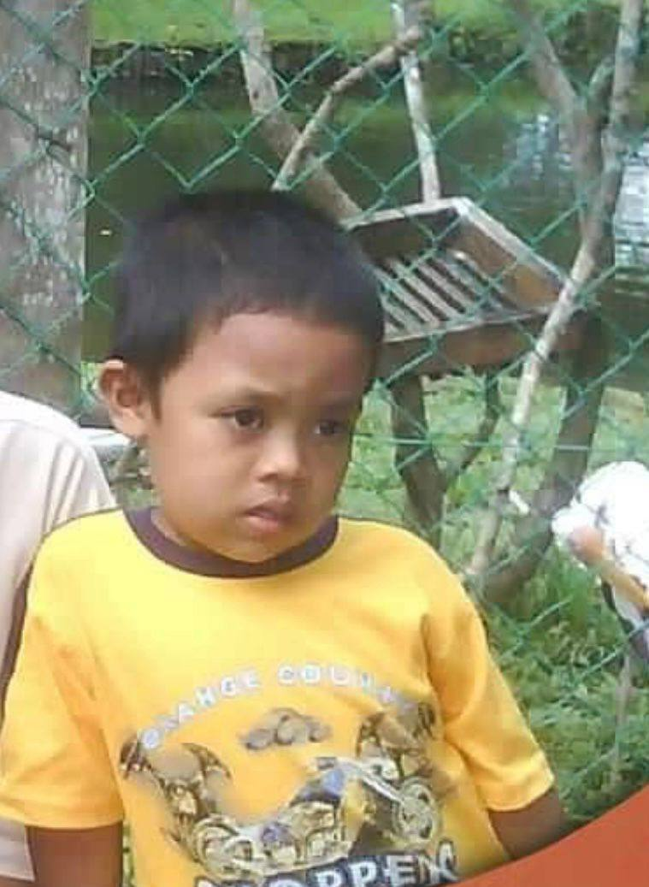
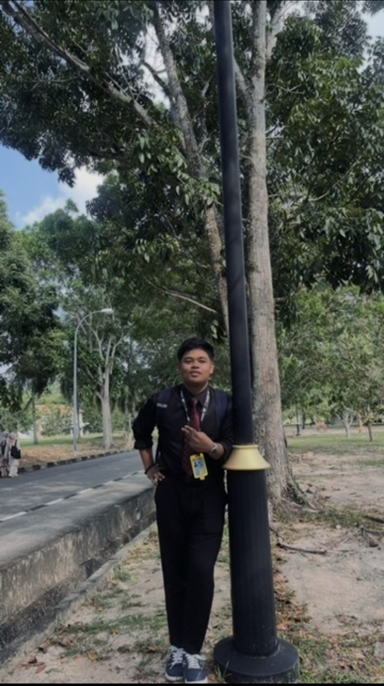

“The future belongs to those who believe in the beauty of their dreams.” — Eleanor Roosevelt
Introduction
Hello! My name is Muhammad Ikram Mursyidi. I am a 20-year-old student pursuing Information Management, and I have always been passionate about exploring new knowledge and discovering how technology shapes the world around us. I enjoy expressing my creativity through design, writing, and digital projects, and I’m constantly looking for new skills to learn and new ideas to develop. Whether it’s designing visuals, creating websites, or improving my technical abilities, I love turning imagination into something real. This storyboard shares my journey, the experiences that shaped me, and the dreams that continue to inspire my path forward.

My Childhood
I was born in Putrajaya, and later my family moved to Penang, where I spent most of my childhood and created many meaningful memories. Growing up in Penang had a big influence on my character, because the environment, the people, and the culture around me shaped the way I think and the person I am becoming. When I was young, I really enjoyed spending time outdoors, especially playing badminton with my friends and swimming whenever I had the chance. These activities taught me discipline, teamwork, and the importance of staying active and healthy. My childhood was filled with simple moments that made me happy, and these experiences helped build the values and creativity that guide me today.


My School Life
My school journey began at SK Permatang Binjai, where I developed the basic foundations of learning and discovered the joy of exploring new knowledge. During my primary school years, I built confidence, made close friendships, and learned important values that shaped my character. The supportive environment and dedicated teachers encouraged me to be curious, disciplined, and creative.
As I moved into secondary school at SMK Permatang Tok Jaya, I began to understand myself better and discover my strengths. My experiences there taught me the importance of teamwork, leadership, and responsibility through group projects, class activities, and school programs. This stage of my life also deepened my interest in technology, especially as I became more involved in digital tools, problem-solving tasks, and subjects that required analytical thinking. SMKPTJ played a major role in guiding me toward my future goals and helping me identify the path I wanted to pursue.
After completing secondary school, I continued my studies at UiTM Kedah, where I am currently pursuing a diploma in Information Management. Life in university has brought a new level of independence and maturity. Through my programme, I have gained valuable skills in data handling, information systems, digital management, research, and communication. UiTM Kedah has provided a space for me to grow academically and personally, while helping me prepare for a future career in the field of technology and information. Each semester teaches me something new and strengthens my passion for this field.

My Dreams & Goals
In the future, I aspire to become a software developer and designer who builds technology that truly helps people. I want to create digital solutions that make everyday life easier, smarter, and more meaningful, whether through apps, websites, or innovative tools that solve real problems. I hope to continuously improve my skills in coding, design, and creative thinking so I can bring my ideas to life with purpose and impact. My dream is to contribute to the fast-growing world of technology by developing projects that inspire others, improve productivity, and make a positive difference in society. I want to build a career where I can grow, explore new possibilities, and create technology that leaves a lasting value for the future.
Conclusion
Thank you for reading my storyboard! My journey is just beginning, and I hope to grow more each day as I continue discovering who I am and what I want to achieve in life. I believe that every experience, challenge, and opportunity will help shape me into a better version of myself. I will keep learning, improving my skills, and pushing myself to reach new goals while staying true to my passions and values. I am excited for the future that awaits me, and I hope to make a positive impact on the people around me through my actions, creativity, and dedication.